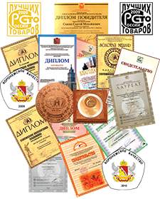

Производство кондитерских изделий. Сладость в радость!
Торгово – производственная компания “Славия” была основана в июле 1997 года. softpech 10Основным видом деятельности которой являлось производство кондитерских изделий. Ассортимент был не велик, да и площадь производства составляла всего 240 кв.м. но время не стоит на месте, так и ТПК “Славия” уверенно двигалась вперед. Приобреталось высоко – технологическое оборудование, расширялись цеха. Главным девизом предприятия становится “Высокое качество – доступные цены”. В 1999 году происходит успешное продвижение продукции на региональном рынке, что позволило вновь расширить производство и приобрести новые технологические линии. Ассортимент продукции возрос до 50 видов. К 2002 году ТПК “Славия” становится одним из лидеров в производстве кондитерских изделий г. Пензы и близ лежащих регионов. Высокая конкурентность на рынке кондитерских изделий заставляет неуклонно следовать девизу предприятия. ТПК “Славия” приобретая бесценный опыт и традиции производства стремится предоставить своим потребителям продукцию абсолютно удовлетворяющую требованиям по вкусовым характеристикам, составу и безопасности.
В настоящее время ТПК “Славия” представляет собой развитый производственный комплекс, состоящий из цехов, площадь которых составляет более 2000 кв.м., оснащенных современным оборудованием, учитывающим последние технические достижения.
Ассортимент продукции составляет более 200 видов наименований кондитерских изделий: печенье сахарное, сдобное, сложное, в глазури, пряники, бараночные изделия, шоколадные конфеты, суфле и мармелад. Наши высококвалифицированные технологи и производственники постоянно совершенствуются. Каждый месяц ассортиментная линейка обновляется на 3-5 наименований, разрабатываются новые оригинальные виды кондитерских изделий.
Основываясь на отзывах наших постоянных партнеров, мы можем смело утверждать, что продукция ТПК “Славия» помогает привлекать дополнительных покупателей, принося стабильную прибыль, имея при этом постоянный спрос и гарантированное качество.
Мы будем рады взаимовыгодному сотрудничеству с Вами! В свою очередь мы гарантируем высокое качество продукции, стабильность ассортимента и своевременность поставок!